Make Genome-level Trellis Graph
Zuguang Gu (z.gu@dkfz.de)
2024-02-27
Source:vignettes/gtrellis_full.Rmd
gtrellis_full.RmdTrellis graph is a type of graph which splits data by certain conditions and visualizes subset of data in each category parallel. In genomic data analysis, the conditional variable is mostly the chromosome. The advantage of Trellis graph is it can easily reveal multiple variable relationship behind the data. In R, lattice and ggplot2 package can make Trellis graph, however, specially for whole genome level plot, they are limited in:
- Chromosomes have different length. But in lattice/ggplot2, panel width for each chromosome are the same, so short chromosomes will be extended with empty areas which sometimes is a waste of space. (just find out latticeExtra allows different panel width.)
- Genomic data are more multiple dimensional, which means, there are always more than one tracks for chromosomes that to be compared. Unfortunately, lattice/ggplot2 can only plot one track at one time.
For a single continuous region, multiple tracks are supported in ggbio and Gviz. But if you want to compare more than one regions, things will be complex. Due to the design of ggbio or Gviz, it will not be so efficient to visualize e.g. larger than 10 regions at a same time.
Here, gtrellis provides a flexible way to arrange genomic categories. It has following advantages:
- The layout is flexible that it is good at visualizing many genomic categories at a same time (e.g. 24 human chromosomes).
- Genomic category is not restricted in chromosome, it can be any type (e.g. genes).
- Support multiple tracks.
- Graphics in tracks can be highly customized.
Basic design
gtrellis aims to arrange genomic categories as Trellis style and supports multiple tracks for visualization. In this package, initializating the layout and adding graphics are independent. After initialization of the layout, intersection between tracks and genomic categories are named cell or panel, and each cell is an independent plotting region (actually, each cell is a viewport in grid system) that self-defined graphics can be added afterwards.
gtrellis is implemented in grid graphic system, so, in order to add graphics in each cell, users need to use low-level graphic functions (grid.points, grid.lines, grid.rect, …) which are quite similar as those in classic graphic system.
Initialize the layout
gtrellis_layout() is used to create the global layout. By default, it initializes the layout with hg19 and puts all chromosomes in one row. Each chromosome has only one track and range on y-axis is 0 to 1.
## Warning: package 'S4Vectors' was built under R version 4.3.2category can be used to set subset of chromosomes as well as the order of chromosomes. gtrellis_show_index() here is an assistant function to add the information to each cell, just for demonstration purpose in this vignette.
gtrellis_layout(category = c("chr3", "chr1"))
gtrellis_show_index()Other species are also supported as long as corresponding chromInfo files exist on UCSC ftp. E.g. chromInfo file for mouse (mm10) is http://hgdownload.cse.ucsc.edu/goldenpath/mm10/database/chromInfo.txt.gz. Since there may be many short scaffolds in chromInfo file, if category is not specified, gtrellis will first remove these short scaffolds before making the plot. Also non-normal chromosomes (e.g. “chr1_xxxxxx”) will also be removed. Sometimes this detection is not always correct, if you find chromosomes shown on the plot is not what you expect, set category manually.
gtrellis_layout(species = "mm10")
gtrellis_show_index()You can put chromosomes on multiple rows by specifying nrow or/and ncol. For chromosomes in the same column, the corresponding width is the width of the longest chromosome in that column and short chromosomes will be extended with empty areas.
gtrellis_layout(nrow = 3)
gtrellis_show_index()
gtrellis_layout(ncol = 5)
gtrellis_show_index()You can set byrow argument to arrange chromosomes either by rows or by columns. As explained before, by default chromosomes in the same column will share the length of the longest one. It is better to put chromosomes with similar length in a same column.
gtrellis_layout(ncol = 5, byrow = FALSE)
gtrellis_show_index()If equal_width is set to TRUE, the layout will be a ‘standard’ Trellis layout. All chromosomes will share the same range on x-axis (length of the longest chromosome) and short chromosomes will be extended with empty areas.
gtrellis_layout(equal_width = TRUE)
gtrellis_show_index()
Make all columns having equal width and also set multiple rows.
gtrellis_layout(ncol = 5, byrow = FALSE, equal_width = TRUE)
gtrellis_show_index()There is also a ‘compact’ mode of the layout that when there are multiple rows, chromosomes on a same row can be put compactly without being aligned to corresponding columns. This mode saves a lot of white space but the drawback is that it is not easy to directly compare positions among chromosomes.
gtrellis_layout(nrow = 3, compact = TRUE)
gtrellis_show_index()
Set gaps between chromosomes. Note if it is set as a numeric value, it should only be 0 (no gap).
gtrellis_layout(gap = 0)Or gap can be a unit object.
gtrellis_layout(gap = unit(5, "mm"))When you arrange the layout with multiple rows, you can also set gap as length of two. In this case, the first element corresponds to the gaps between rows and the second corresponds to the gaps between columns.
gtrellis_layout(ncol = 5, gap = unit(c(5, 2), "mm"))There may be multiple tracks for chromosomes which describe multiple dimensional data. The tracks can be created by n_track argument.
gtrellis_layout(n_track = 3)
gtrellis_show_index()By default, tracks share the same height. The height can be customized by track_height argument. If it is set as numeric values, it will be normalized as percent to the sum.
gtrellis_layout(n_track = 3, track_height = c(1, 2, 3))track_height can also be a unit object.
gtrellis_layout(n_track = 3,
track_height = unit.c(unit(1, "cm"), unit(1, "null"), grobHeight(textGrob("chr1"))))track_axis controls whether to show y-axes. If certain value is set to FALSE, y-axis on corresponding track will not be drawn.
gtrellis_layout(n_track = 3, track_axis = c(FALSE, TRUE, FALSE), xaxis = FALSE, xlab = "")Set y-lim by track_ylim. It should be a two-column matrix. But to make things easy, it can also be a vector and it will be filled into a two-column matrix by rows. If it is a vector with length 2, it means all tracks share the same y-lim.
gtrellis_layout(n_track = 3, track_ylim = c(0, 3, -4, 4, 0, 1000000))Axis ticks are added on one side of rows or columns, asist_ticks controls whether to add axis ticks on the other sides. (You can compare following figure to the above one.)
gtrellis_layout(n_track = 3, track_ylim = c(0, 3, -4, 4, 0, 1000000), asist_ticks = FALSE)Set x-label by xlab and set y-labels by track_ylab.
gtrellis_layout(n_track = 3, title = "title", track_ylab = c("", "bbbbbb", "ccccccc"), xlab = "xlab")Since chromosomes can have more than one tracks, following shows a layout with multiple columns and multiple tracks.
gtrellis_layout(n_track = 3, ncol = 4)
gtrellis_show_index()Set border to FALSE to remove borders.
gtrellis_layout(n_track = 3, ncol = 4, border = FALSE, xaxis = FALSE, track_axis = FALSE, xlab = "")
gtrellis_show_index()Add graphics
After the initialization of the layout, each cell can be thought as an ordinary coordinate system. Then graphics can be added in afterwards.
Pre-defined track
First we will introduce functions which add fixed types of graphics.
add_points_track() directly adds points at the middle points of corresponding genomic regions. The genomic region variable can be either a data frame or a GRanges object.
library(circlize)
bed = generateRandomBed()
gtrellis_layout(track_ylim = range(bed[[4]]), nrow = 3, byrow = FALSE)
add_points_track(bed, bed[[4]], gp = gpar(col = ifelse(bed[[4]] > 0, "red", "green")))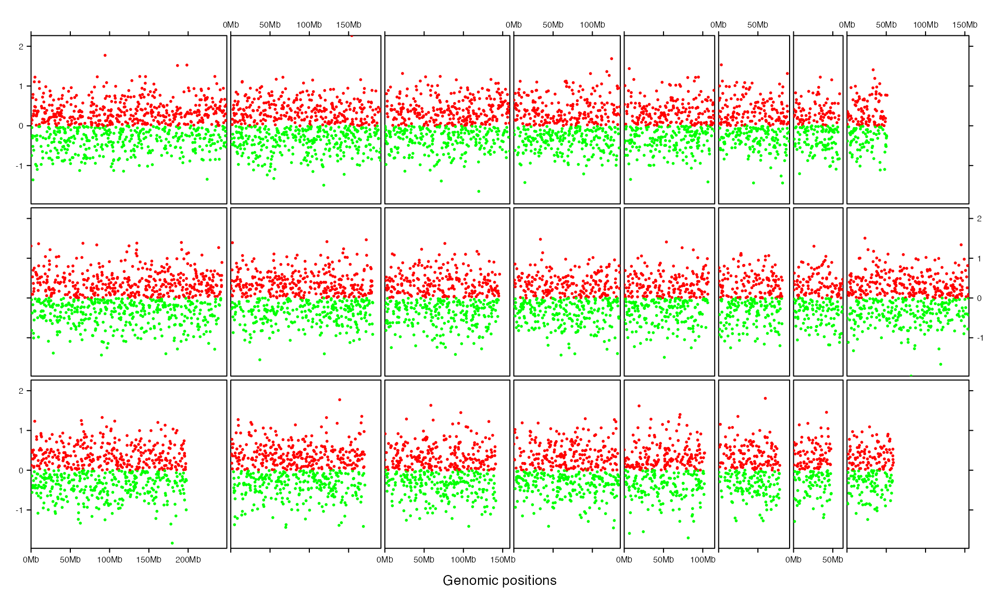
add_segments_track() adds segments for corresponding regions.
bed = generateRandomBed(nr = 100)
gtrellis_layout(track_ylim = range(bed[[4]]), nrow = 3, byrow = FALSE)
add_segments_track(bed, bed[[4]], gp = gpar(col = ifelse(bed[[4]] > 0, "red", "green"), lwd = 4))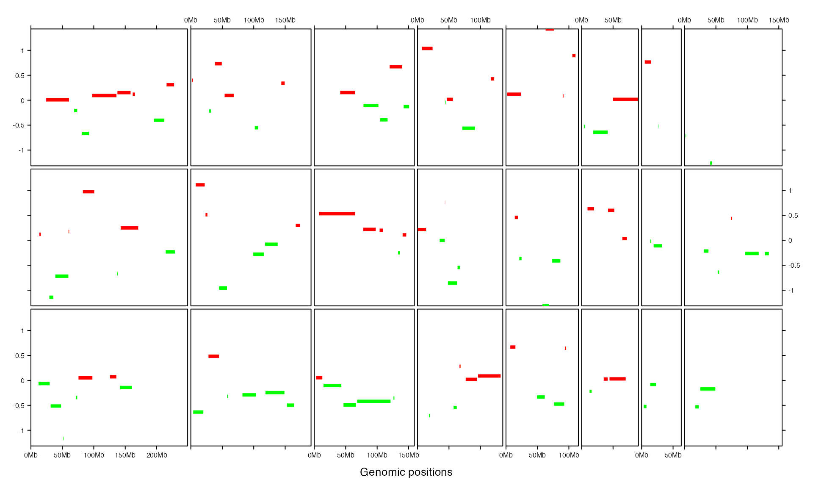
add_lines_track() adds lines. Also it can draw areas below the lines (or above, depending on baseline).
bed = generateRandomBed(200)
gtrellis_layout(n_track = 2, track_ylim = rep(range(bed[[4]]), 2), nrow = 3, byrow = FALSE)
add_lines_track(bed, bed[[4]])
add_lines_track(bed, bed[[4]], area = TRUE, gp = gpar(fill = "grey", col = NA))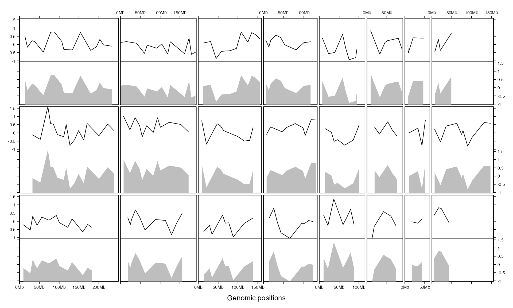
add_rect_track() adds rectangles which is useful to draw bars.
col_fun = colorRamp2(c(-1, 0, 1), c("green", "black", "red"))
gtrellis_layout(track_ylim = range(bed[[4]]), nrow = 3, byrow = FALSE)
add_rect_track(bed, h1 = bed[[4]], h2 = 0,
gp = gpar(col = NA, fill = col_fun(bed[[4]])))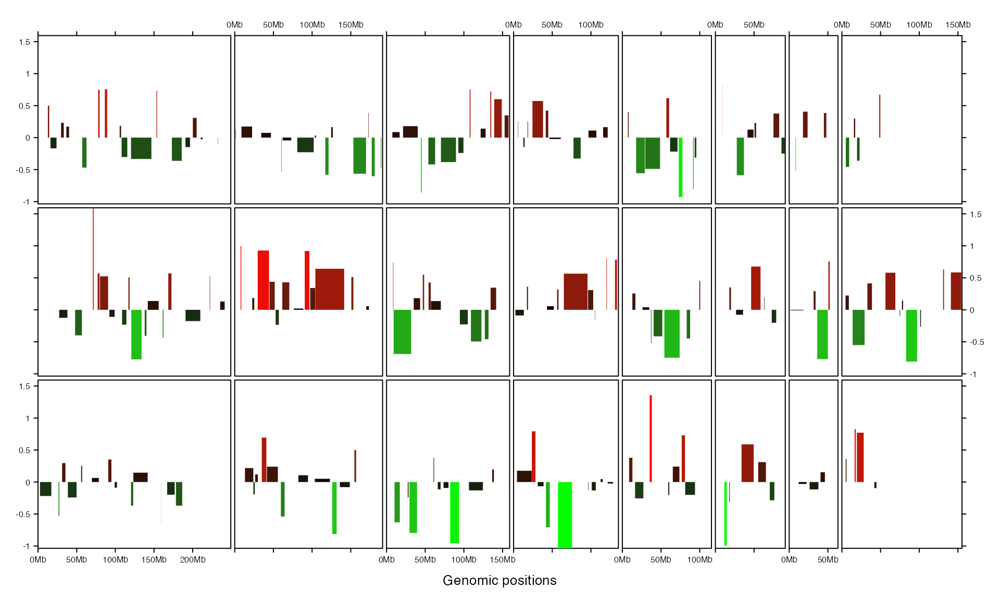
add_heatmap_track() adds heatmap. Heatmap will fill the whole track vertically.
gtrellis_layout(nrow = 3, byrow = FALSE, track_axis = FALSE)
mat = matrix(rnorm(nrow(bed)*4), ncol = 4)
add_heatmap_track(bed, mat, fill = col_fun)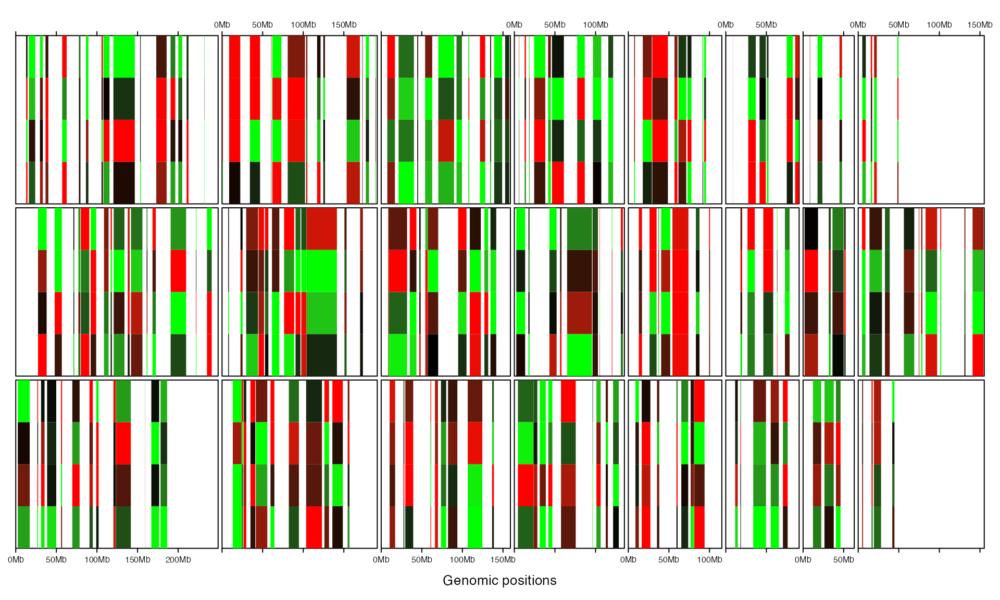
By default, these pre-defined graphic functions draw in the next track. However, different types of graphics can be drawn in a same track by manually setting track.
col_fun = colorRamp2(c(-1, 0, 1), c("green", "black", "red"))
gtrellis_layout(track_ylim = range(bed[[4]]), nrow = 3, byrow = FALSE)
add_rect_track(bed, h1 = bed[[4]], h2 = 0, gp = gpar(col = NA, fill = col_fun(bed[[4]])))
add_lines_track(bed, bed[[4]], track = current_track())
add_points_track(bed, bed[[4]], track = current_track(), size = unit(abs(bed[[4]])*5, "mm"))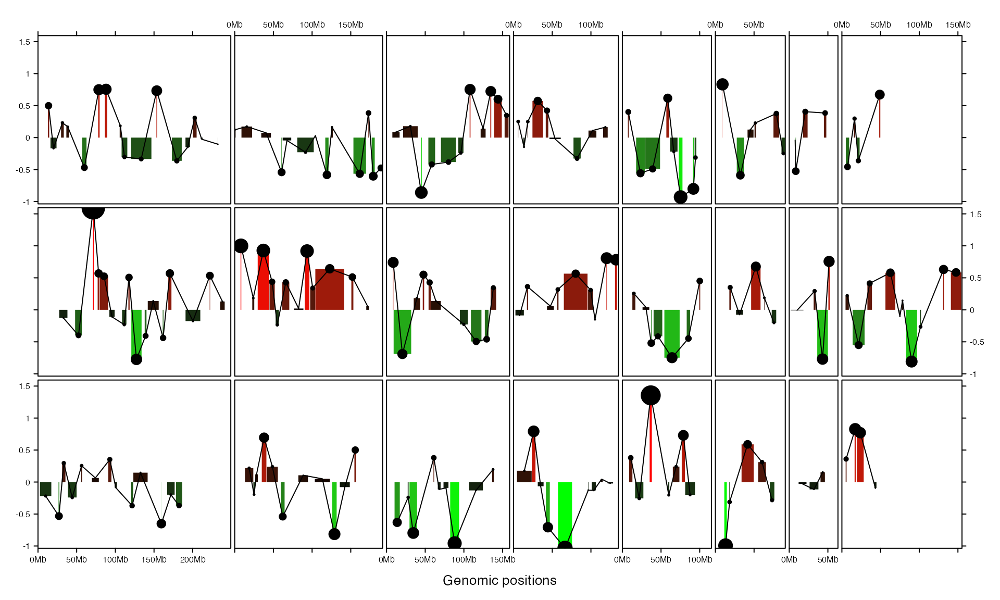
Customized track
More generally, add_track() allows adding self-defined graphics. Actually this is how add_points_track(), add_segments_track(), add_lines_track(), add_rect_track() and add_heatmap_track() are implemented.
The self-defined graphics are added by panel_fun argument which should be a function. panel_fun is applied to every genomic categories (e.g. chromosomes) and the input value of panel_fun is a subset of data which corresponds to the current chromosome. Following example simply shows how to add points by panel_fun.
bed = generateRandomBed()
gtrellis_layout(track_ylim = range(bed[[4]]))
add_track(bed, panel_fun = function(bed) {
# `bed` inside `panel_fun` is a subset of the main `bed`
x = (bed[[2]] + bed[[3]]) / 2
y = bed[[4]]
grid.points(x, y, pch = 16, size = unit(1, "mm"))
})If the input data is a GRanges object, the input variable in panel_fun is also a GRanges object.
gr = GRanges(seqnames = bed[[1]],
ranges = IRanges(start = bed[[2]],
end = bed[[3]]),
score = bed[[4]])
gtrellis_layout(track_ylim = range(gr$score))
add_track(gr, panel_fun = function(gr) {
x = (start(gr) + end(gr)) / 2
y = gr$score
grid.points(x, y, pch = 16, size = unit(1, "mm"))
})Initialization and adding graphics are actually independent. Following example uses same code to add graphics but with different layout.
gtrellis_layout(nrow = 5, byrow = FALSE, track_ylim = range(bed[[4]]))
add_track(bed, panel_fun = function(bed) {
x = (bed[[2]] + bed[[3]]) / 2
y = bed[[4]]
grid.points(x, y, pch = 16, size = unit(1, "mm"))
})Examples
In following, we make rainfall plot as well as the density distribution of genomic regions (in the example below, DMR_hyper contains differentially methylated regions that show high methylation compared to control samples and in DMR_hypo the methylation is lower than control samples). Also, we manually add a track which contains chromosome names and a track which contains ideograms.
Density for genomic regions is defined as the percent of a genomic window that is covered by the input genomic regions.
load(system.file("extdata", "DMR.RData", package = "circlize"))
DMR_hyper_density = circlize::genomicDensity(DMR_hyper, window.size = 1e7)
head(DMR_hyper_density)## chr start end value
## 1 chr1 1 10000000 0.0038096
## 2 chr1 5000001 15000000 0.0019618
## 3 chr1 10000001 20000000 0.0029903
## 4 chr1 15000001 25000000 0.0024798
## 5 chr1 20000001 30000000 0.0020628
## 6 chr1 25000001 35000000 0.0024249Initialize the layout and add following four tracks:
- chromosome names, simple text.
- rainfall plot, first apply rainfall transformation and then add points.
- genomic density, lines with area (actually it is polygons).
- ideogram, rectangles.
gtrellis_layout(n_track = 4, ncol = 4, byrow = FALSE,
track_axis = c(FALSE, TRUE, TRUE, FALSE),
track_height = unit.c(2*grobHeight(textGrob("chr1")),
unit(1, "null"),
unit(0.5, "null"),
unit(3, "mm")),
track_ylim = c(0, 1, 0, 8, c(0, max(DMR_hyper_density[[4]])), 0, 1),
track_ylab = c("", "log10(inter_dist)", "density", ""))
# track for chromosome names
add_track(panel_fun = function(gr) {
# the use of `get_cell_meta_data()` will be introduced later
chr = get_cell_meta_data("name")
grid.rect(gp = gpar(fill = "#EEEEEE"))
grid.text(chr)
})
# track for rainfall plots
DMR_hyper_rainfall = circlize::rainfallTransform(DMR_hyper)
add_points_track(DMR_hyper_rainfall, log10(DMR_hyper_rainfall[[4]]),
pch = 16, size = unit(1, "mm"), gp = gpar(col = "red"))
# track for genomic density
add_lines_track(DMR_hyper_density, DMR_hyper_density[[4]], area = TRUE,
gp = gpar(fill = "pink"))
# track for ideogram
cytoband_df = circlize::read.cytoband(species = "hg19")$df
add_track(cytoband_df, panel_fun = function(gr) {
cytoband_chr = gr
grid.rect(cytoband_chr[[2]], unit(0, "npc"),
width = cytoband_chr[[3]] - cytoband_chr[[2]], height = unit(1, "npc"),
default.units = "native", hjust = 0, vjust = 0,
gp = gpar(fill = circlize::cytoband.col(cytoband_chr[[5]])))
grid.rect(min(cytoband_chr[[2]]), unit(0, "npc"),
width = max(cytoband_chr[[3]]) - min(cytoband_chr[[2]]), height = unit(1, "npc"),
default.units = "native", hjust = 0, vjust = 0,
gp = gpar(fill = "transparent"))
})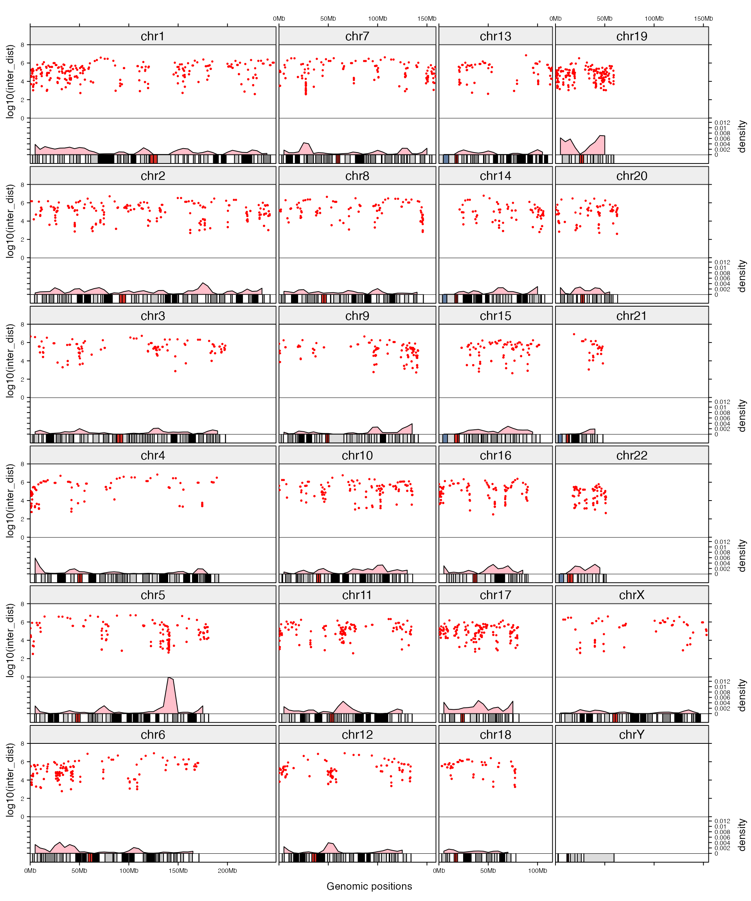
Actually, you don’t need to add name track and ideogram track manually. Name track and ideogram track can be added by add_name_track and add_ideogram_track arguments. Name track will be inserted before the first track and ideogram track will be inserted after the last track. So in following example, although we only specified n_track to 2, but the name track and ideogram track are also added, thus, the final number of track is 4.
In following example, we additionally add graphics for hypo-DMR as well so that direct comparison between different methylation patterns can be performed. Since rainfall plots for both hyper-DMR and hypo-DMR are added in a same track, we explicitly specify value of track argument to current_track() in add_track().
DMR_hypo_density = circlize::genomicDensity(DMR_hypo, window.size = 1e7)
DMR_hypo_rainfall = circlize::rainfallTransform(DMR_hypo)
gtrellis_layout(n_track = 2, ncol = 4, byrow = FALSE,
track_axis = TRUE,
track_height = unit.c(unit(1, "null"),
unit(0.5, "null")),
track_ylim = c(0, 8, c(0, max(c(DMR_hyper_density[[4]], DMR_hypo_density[[4]])))),
track_ylab = c("log10(inter_dist)", "density"),
add_name_track = TRUE, add_ideogram_track = TRUE)
# put into a function and we will use it later
add_graphics = function() {
add_points_track(DMR_hyper_rainfall, log10(DMR_hyper_rainfall[[4]]),
pch = 16, size = unit(1, "mm"), gp = gpar(col = "#FF000080"))
add_points_track(DMR_hypo_rainfall, log10(DMR_hypo_rainfall[[4]]), track = current_track(),
pch = 16, size = unit(1, "mm"), gp = gpar(col = "#0000FF80"))
# track for genomic density
add_lines_track(DMR_hyper_density, DMR_hyper_density[[4]], area = TRUE,
gp = gpar(fill = "#FF000080"))
add_lines_track(DMR_hypo_density, DMR_hypo_density[[4]], area = TRUE, track = current_track(),
gp = gpar(fill = "#0000FF80"))
}
add_graphics()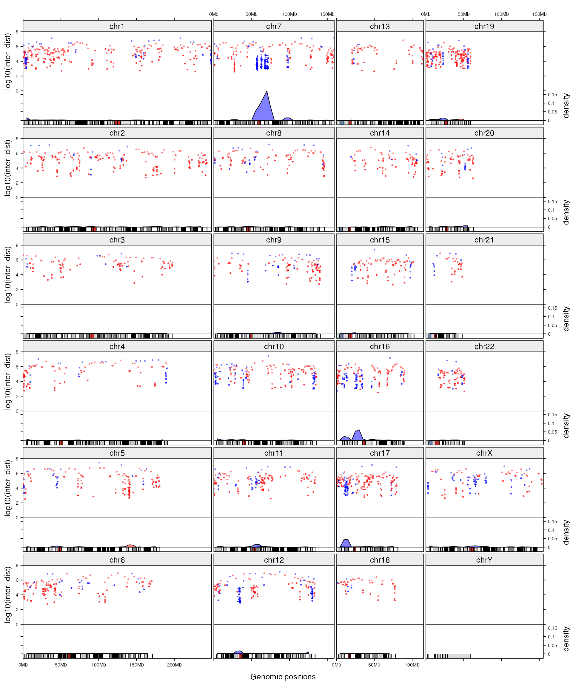
Next we change the layout to the ‘compact’ mode without changing the code that adds graphics.
gtrellis_layout(n_track = 2, nrow = 4, compact = TRUE,
track_axis = TRUE,
track_height = unit.c(unit(1, "null"),
unit(0.5, "null")),
track_ylim = c(0, 8, c(0, max(c(DMR_hyper_density[[4]], DMR_hypo_density[[4]])))),
track_ylab = c("log10(inter_dist)", "density"),
add_name_track = TRUE, add_ideogram_track = TRUE)
add_graphics()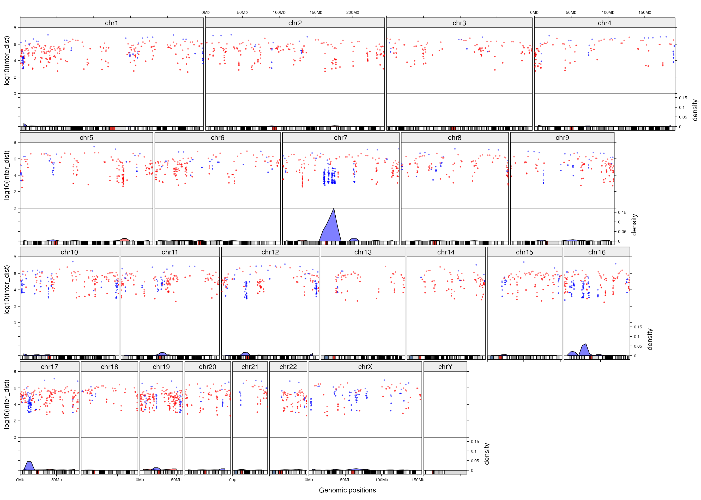
By default, tracks are added from the first track to the last one. You can also add graphics in any specified chromosomes and tracks by specifying category and track.
all_chr = paste0("chr", 1:22)
letter = strsplit("MERRY CHRISTMAS!", "")[[1]]
gtrellis_layout(nrow = 5)
for(i in seq_along(letter)) {
add_track(category = all_chr[i], track = 1, panel_fun = function(gr) {
grid.text(letter[i], gp = gpar(fontsize = 30))
})
}Following code plots coverage for a tumor sample, its companion normal sample and the ratio of coverage. First prepare the data:
tumor_df = readRDS(system.file("extdata", "df_tumor.rds", package = "gtrellis"))
control_df = readRDS(system.file("extdata", "df_control.rds", package = "gtrellis"))
# remove regions that have zero coverage
ind = which(tumor_df$cov > 0 & control_df$cov > 0)
tumor_df = tumor_df[ind, , drop = FALSE]
control_df = control_df[ind, , drop = FALSE]
ratio_df = tumor_df
# get rid of small value dividing small value resulting large value
q01 = quantile(c(tumor_df$cov, control_df$cov), 0.01)
ratio_df[[4]] = log2( (tumor_df$cov+q01) / (control_df$cov+q01) *
sum(control_df$cov) / sum(tumor_df$cov) )
names(ratio_df) = c("chr", "start", "end", "ratio")
tumor_df[[4]] = log10(tumor_df[[4]])
control_df[[4]] = log10(control_df[[4]])Then, initialize the layout and add three tracks.
cov_range = range(c(tumor_df[[4]], control_df[[4]]))
ratio_range = range(ratio_df[[4]])
ratio_range = c(-max(abs(ratio_range)), max(abs(ratio_range)))
gtrellis_layout(n_track = 3, nrow = 3, byrow = FALSE, gap = unit(c(4, 1), "mm"),
track_ylim = c(cov_range, cov_range, ratio_range),
track_ylab = c("tumor, log10(cov)", "control, log10(cov)", "ratio, log2(ratio)"),
add_name_track = TRUE, add_ideogram_track = TRUE)
# track for coverage in tumor
add_points_track(tumor_df, tumor_df[[4]], pch = 16, size = unit(2, "bigpts"),
gp = gpar(col = "#00000020"))
add_points_track(control_df, tumor_df[[4]], pch = 16, size = unit(2, "bigpts"),
gp = gpar(col = "#00000020"))
# track for ratio between tumor and control
library(RColorBrewer)
col_fun = circlize::colorRamp2(seq(-0.5, 0.5, length = 11), rev(brewer.pal(11, "RdYlBu")),
transparency = 0.5)
add_track(ratio_df, panel_fun = function(gr) {
x = (gr[[2]] + gr[[3]])/2
y = gr[[4]]
grid.lines(unit(c(0, 1), "npc"), unit(c(0, 0), "native"), gp = gpar(col = "#0000FF80", lty = 2))
grid.points(x, y, pch = 16, size = unit(2, "bigpts"), gp = gpar(col = col_fun(y)))
})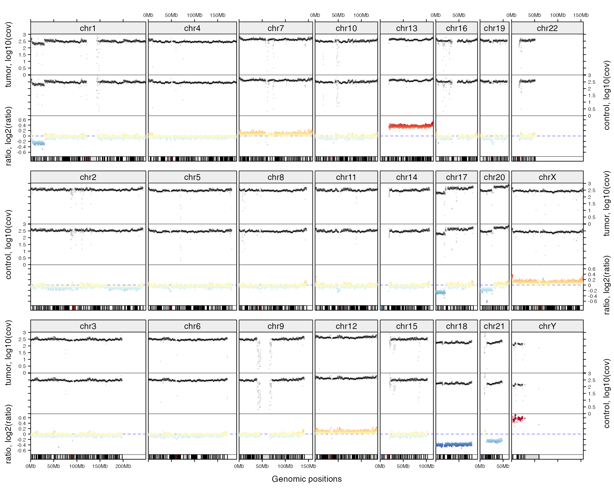
Following example visualizes gene density (defined as how much a genomic window is covered by gene regions) on different chromosomes both by a line track and a heatmap track.
gene = readRDS(system.file("extdata", "gencode_v19_protein_coding_genes.rds", package = "gtrellis"))
gene_density = genomicDensity(gene)
gtrellis_layout(byrow = FALSE, n_track = 2, ncol = 4,
add_ideogram_track = TRUE, add_name_track = TRUE,
track_ylim = c(0, max(gene_density[[4]]), 0, 1), track_axis = c(TRUE, FALSE),
track_height = unit.c(unit(1, "null"), unit(4, "mm")),
track_ylab = c("density", ""))
add_lines_track(gene_density, gene_density[[4]])
col_fun = circlize::colorRamp2(seq(0, max(gene_density[[4]]), length = 11),
rev(brewer.pal(11, "RdYlBu")))
add_heatmap_track(gene_density, gene_density[[4]], fill = col_fun)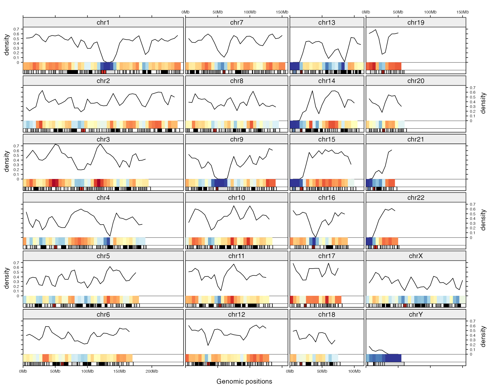
Following two plots compares the Manhattan plot with default and enhanced layout.
The GWAS data was downloaded from UCSC Table Browser. The parameters for downloading were:
clade: Mammal
genome: Human
assembly: Feb. 2009(GRCh37/hg19)
group: Phenotype and Literature
track: GWAS Catalog
table: gwasCatalog
load(system.file("extdata", "gwasCatalog.RData", package = "gtrellis"))
head(gwas)## chr start end name p-value
## 1 chr1 1005805 1005806 rs3934834 6e-07
## 2 chr1 1079197 1079198 rs11260603 4e-07
## 3 chr1 1247493 1247494 rs12103 8e-13
## 4 chr1 1723030 1723031 rs9660180 8e-07
## 5 chr1 1723030 1723031 rs9660180 6e-07
## 6 chr1 2069171 2069172 rs425277 2e-08First we make the normal Manhattan plot. From the plot below, basically we can only see there are SNPs that show high significance and on chromosome 6 there exists a cluster where the SNP density are very high.
library(gtrellis)
gtrellis_layout(category = paste0("chr", 1:22), track_ylim = range(v), track_ylab = "-log10(p)")
add_points_track(gwas, v, gp = gpar(col = "#00000080"))Next we adjust the layout, also we add another track which shows the number of SNPs in 5MB genomic windows. In the new layout, width for each chromosome is much wider than the previous plot, thus, it shows very clearly for the distribution pattern of highly significant SNPs in the genome (in the previous plot, due to the narrow plotting area for each chromosome, the distribution of SNPs seems random). The additional track gives an exact view that SNP density is dominantly high in a cluster on chromosome 6 and there are also many small hotspot mutation areas spreading the genome.
library(circlize)
# how many SNPs in every 5MB window
d = genomicDensity(gwas, 5e6)
d[, 4] = d[, 4] * 5e6
gtrellis_layout(nrow = 4, byrow = FALSE, n_track = 2, category = paste0("chr", 1:22),
add_ideogram_track = TRUE, add_name_track=TRUE, track_ylim = c(range(v), range(d[, 4])),
track_height = c(2, 1), track_ylab = c("-log10(p)", "#SNP"))
add_points_track(gwas, v, gp = gpar(col = "#00000080"))
add_lines_track(d, d[, 4], area = TRUE, gp = gpar(fill = "#999999", col = NA))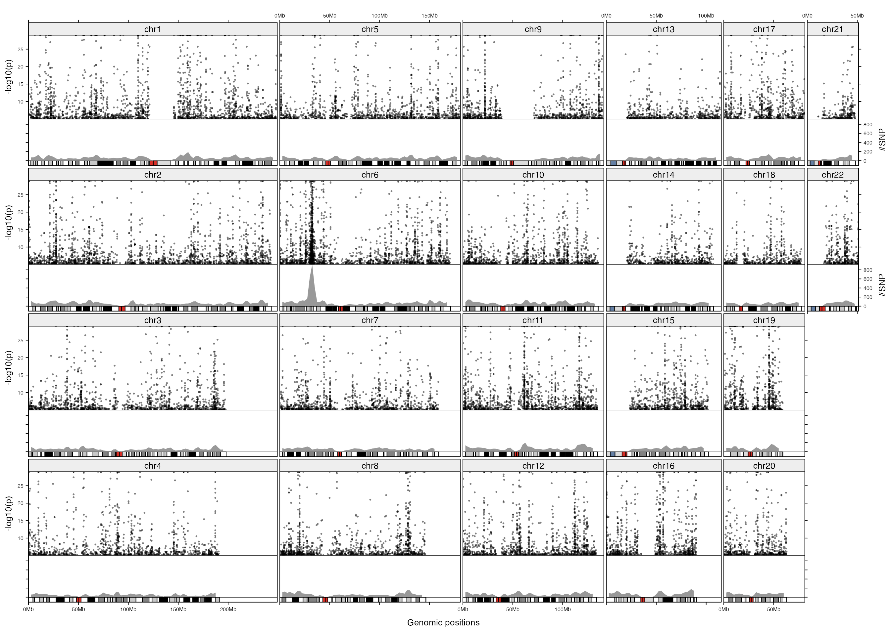
Following figure is karyogram view of genomic regions (reproduced from http://www.tengfei.name/ggbio/docs/man/layout_karyogram-method.html). We arrange the layout as one column and create two ‘short’ tracks, one for genomic regions and one for ideogram. Different values are mapped to continuous colors.
We specified n_track to 1, but we also specify add_ideogram_track to TRUE, so actually there are two tracks. xpadding is specified to make some space on the left of the cells so that We can manually add chromosome names in the second track.
bed = generateRandomBed(nr = 10000)
bed = bed[sample(10000, 100), ]
col_fun = colorRamp2(c(-1, 0, 1), c("green", "yellow", "red"))
gtrellis_layout(n_track = 1, ncol = 1, track_axis = FALSE, xpadding = c(0.1, 0),
gap = unit(4, "mm"), border = FALSE, asist_ticks = FALSE, add_ideogram_track = TRUE,
ideogram_track_height = unit(2, "mm"))
add_track(bed, panel_fun = function(gr) {
grid.rect((gr[[2]] + gr[[3]])/2, unit(0.2, "npc"), unit(1, "mm"), unit(0.8, "npc"),
hjust = 0, vjust = 0, default.units = "native",
gp = gpar(fill = col_fun(gr[[4]]), col = NA))
})
add_track(track = 2, clip = FALSE, panel_fun = function(gr) {
chr = get_cell_meta_data("name")
if(chr == "chrY") {
grid.lines(get_cell_meta_data("xlim"), unit(c(0, 0), "npc"),
default.units = "native")
}
grid.text(chr, x = 0, y = 0, just = c("left", "bottom"))
})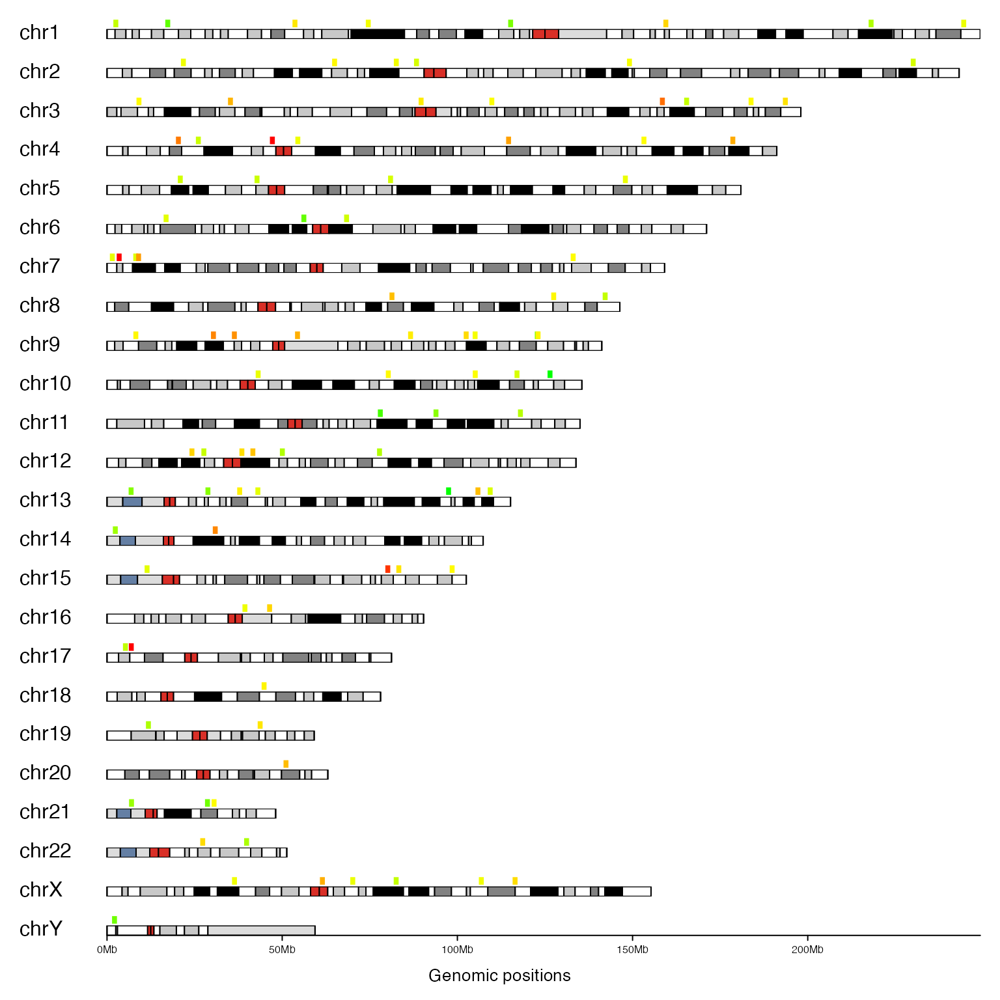
Get meta data for each cell
For every cell in the plot, several meta data can be extracted by get_cell_meta_data(). get_cell_meta_data() is always used inside panel_fun to extract information about the ‘current cell’. You can also use the function outside panel_fun by explicitly specifying category and track. Pseudo code are:
gtrellis_layout()
add_track(panel_fun = function(gr) {
# get xlim of current cell
xlim = get_cell_meta_data("xlim")
})
# get xlim of the specified cell
xlim = get_cell_meta_data("xlim", category = "chr2", track = 1)Following meta data can be retrieved by get_cell_meta_data():
-
name: category name, e.g. the chromosome name. -
xlim: xlim without including padding, cells in a same column shares the samexlim. -
ylim: ylim without including padding. -
extended_xlim: xlim with padding. -
extended_ylim: ylim with padding. -
original_xlim: xlim in original data. -
original_ylim: ylim in original data. -
column: which column in the layout. -
row: which row in the layout. -
track: which track in the layout.
Following figure demonstrates difference between different cell meta data. The space between extended_xlim and xlim is the padding regions on x direction.
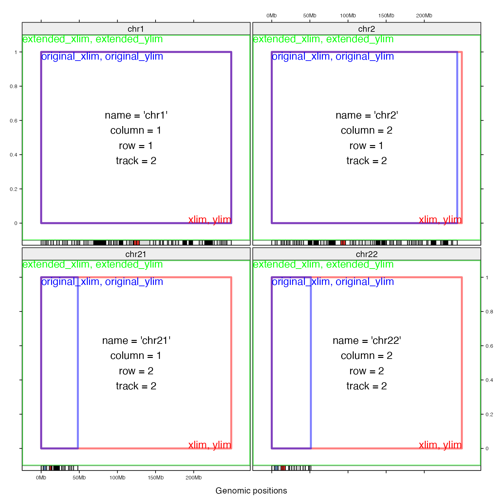
Legend
Legend can be added by legend argument. The value must be a grob object. ColorMapping class and Legend() function in ComplexHeatmap package or legendGrob() in grid package can be used to create a legend grob. Or you can consider to use frameGrob() and placeGrob() to build a legend from ground.
library(ComplexHeatmap)
bed = generateRandomBed()
lgd = Legend(at = c("class1", "class2"), title = "Class", type = "points", legend_gp = gpar(col = 2:3))
gtrellis_layout(nrow = 5, byrow = FALSE, track_ylim = range(bed[[4]]), legend = lgd)
add_points_track(bed, bed[[4]], gp = gpar(col = sample(2:3, nrow(bed), replace = TRUE)))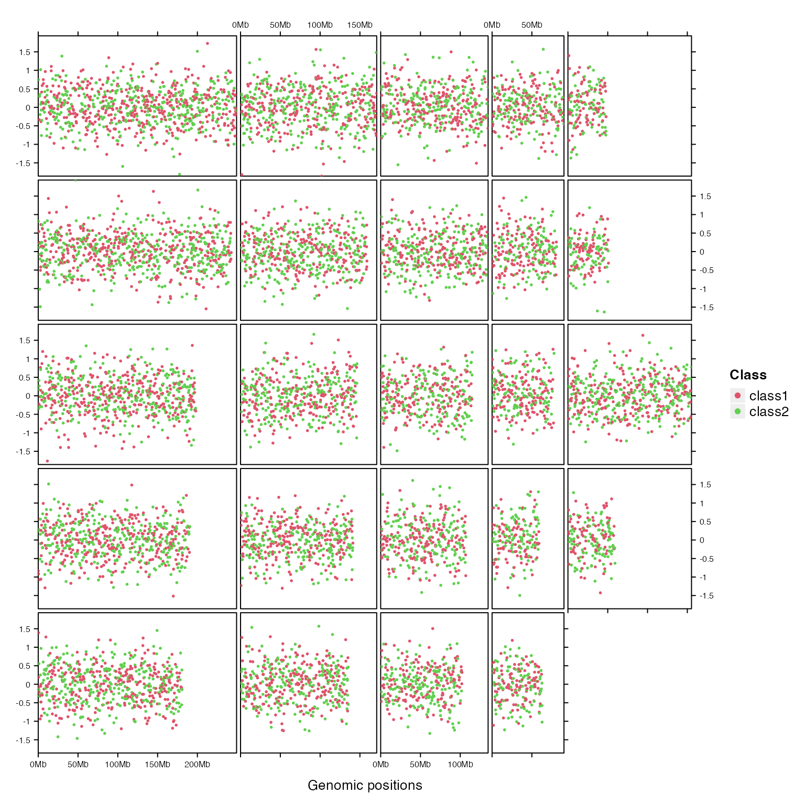
The second example is already shown, but this time we add legend as well:
library(ComplexHeatmap)
bed = generateRandomBed(nr = 10000)
bed = bed[sample(10000, 100), ]
col_fun = colorRamp2(c(-1, 0, 1), c("green", "yellow", "red"))
cm = ColorMapping(col_fun = col_fun)
lgd = color_mapping_legend(cm, plot = FALSE, title = "Value")
gtrellis_layout(n_track = 1, ncol = 1, track_axis = FALSE, xpadding = c(0.1, 0),
gap = unit(4, "mm"), border = FALSE, asist_ticks = FALSE, add_ideogram_track = TRUE,
ideogram_track_height = unit(2, "mm"), legend = lgd)
add_track(bed, panel_fun = function(gr) {
grid.rect((gr[[2]] + gr[[3]])/2, unit(0.2, "npc"), unit(1, "mm"), unit(0.8, "npc"),
hjust = 0, vjust = 0, default.units = "native",
gp = gpar(fill = col_fun(gr[[4]]), col = NA))
})
add_track(track = 2, clip = FALSE, panel_fun = function(gr) {
chr = get_cell_meta_data("name")
if(chr == "chrY") {
grid.lines(get_cell_meta_data("xlim"), unit(c(0, 0), "npc"),
default.units = "native")
}
grid.text(chr, x = 0, y = 0, just = c("left", "bottom"))
})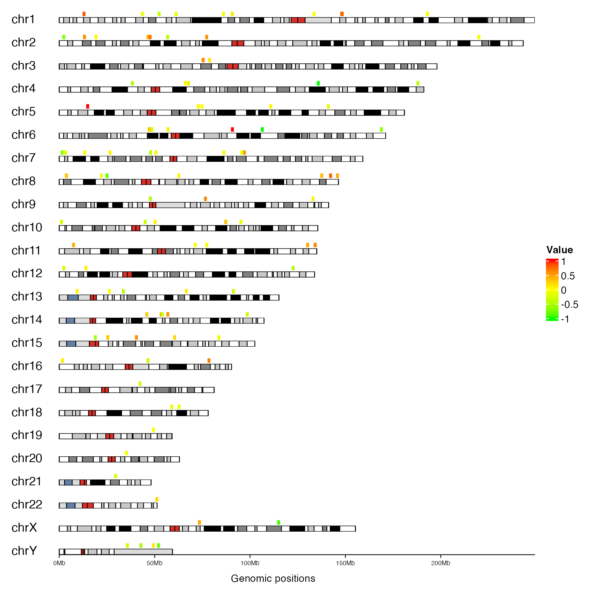
General genomic categories
Genomic categories are not restricted in chromosomes. It can be any kind, such as genes. You can also specify genomic categories as well as their ranges as a data frame when initializing the layout.
In following example, we put three genes in one row and add their transcripts afterwards.
load(paste0(system.file(package = "circlize"), "/extdata/tp_family.RData"))
df = data.frame(gene = names(tp_family),
start = sapply(tp_family, function(x) min(unlist(x))),
end = sapply(tp_family, function(x) max(unlist(x))))
df## gene start end
## TP73 TP73 3569084 3652765
## TP63 TP63 189349205 189615068
## TP53 TP53 7565097 7590856
# maximum number of transcripts
n = max(sapply(tp_family, length))
gtrellis_layout(data = df, n_track = 1, track_ylim = c(0.5, n+0.5),
track_axis = FALSE, add_name_track = TRUE, xpadding = c(0.05, 0.05), ypadding = c(0.05, 0.05))
# put into a function so that we can use it repeatedly
add_tx = function() {
add_track(panel_fun = function(gr) {
gn = get_cell_meta_data("name")
tr = tp_family[[gn]] # all transcripts for this gene
for(i in seq_along(tr)) {
# for each transcript
current_tr_start = min(tr[[i]]$start)
current_tr_end = max(tr[[i]]$end)
grid.lines(c(current_tr_start, current_tr_end), c(n - i + 1, n - i + 1),
default.units = "native", gp = gpar(col = "#CCCCCC"))
grid.rect(tr[[i]][[1]], n - i + 1, tr[[i]][[2]] - tr[[i]][[1]], 0.8,
default.units = "native", just = "left",
gp = gpar(fill = "orange", col = "orange"))
}
})
}
add_tx()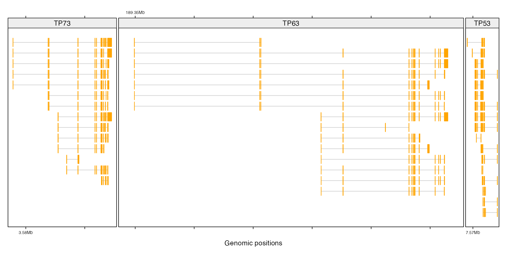
If you want to put all genes on one column and align them by TSS, you need to normalize the genomic coordinate first. In follwoing code, numbers are positions of TSS of corresponding gene.
tp_family$TP53 = lapply(tp_family$TP53, function(df) {
data.frame(start = abs(df[[2]] - 7590856),
end = abs(df[[1]] - 7590856))
})
tp_family$TP63 = lapply(tp_family$TP63, function(df) {
data.frame(start = abs(df[[1]] - 189349205),
end = abs(df[[2]] - 189349205))
})
tp_family$TP73 = lapply(tp_family$TP73, function(df) {
data.frame(start = abs(df[[1]] - 3569084),
end = abs(df[[2]] - 3569084))
})Then similar code as previous one.
df = data.frame(gene = names(tp_family),
start = sapply(tp_family, function(x) min(unlist(x))),
end = sapply(tp_family, function(x) max(unlist(x))))
df## gene start end
## TP73 TP73 0 83681
## TP63 TP63 0 265863
## TP53 TP53 0 25759
n = max(sapply(tp_family, length))
gtrellis_layout(data = df, n_track = 1, ncol = 1, track_ylim = c(0.5, n+0.5),
track_axis = FALSE, add_name_track = TRUE,
xpadding = c(0.01, 0.01), ypadding = c(0.05, 0.05))
add_tx()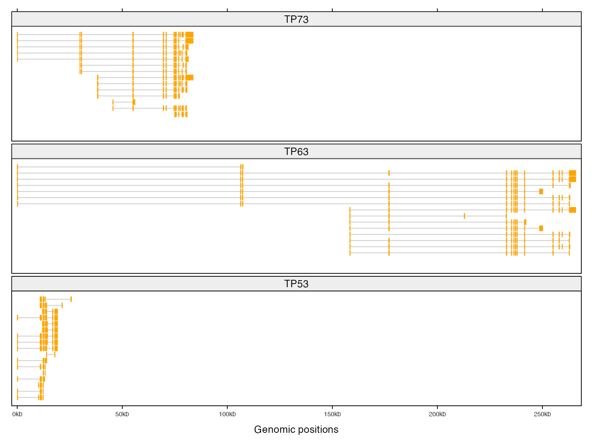
You can create layout with self-defined regions. clip argument controls whether data points outside of the cell need to be added. Since by default clip is TRUE, you do not need to make intersection of your full data to the sub-region, which means, you can use same code to deal with different regions.
col_fun = circlize::colorRamp2(seq(-0.5, 0.5, length = 11), rev(brewer.pal(11, "RdYlBu")),
transparency = 0.5)
zoom = function(df) {
gtrellis_layout(data = df, n_track = 3, nrow = 2,
track_ylim = c(cov_range, cov_range, ratio_range),
track_ylab = c("tumor, log10(cov)", "control, log10(cov)", "ratio, log2(ratio)"),
add_name_track = TRUE, add_ideogram_track = TRUE)
add_points_track(tumor_df, tumor_df[[4]], pch = 16, size = unit(2, "bigpts"),
gp = gpar(col = "#00000080"))
add_points_track(control_df, control_df[[4]], pch = 16, size = unit(2, "bigpts"),
gp = gpar(col = "#00000080"))
add_points_track(ratio_df, ratio_df[[4]], pch = 16, size = unit(2, "bigpts"),
gp = gpar(col = col_fun(ratio_df[[4]])))
}
df = data.frame(chr = c("chr1", "chr2"),
start = c(1e8, 1e8),
end = c(2e8, 2e8))
zoom(df)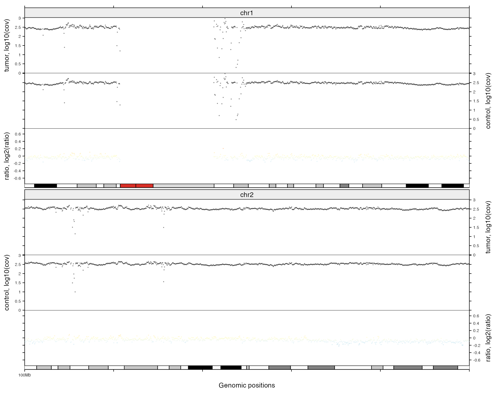
df = data.frame(chr = c("chr11", "chr12"),
start = c(4e7, 4e7),
end = c(8e7, 8e7))
zoom(df)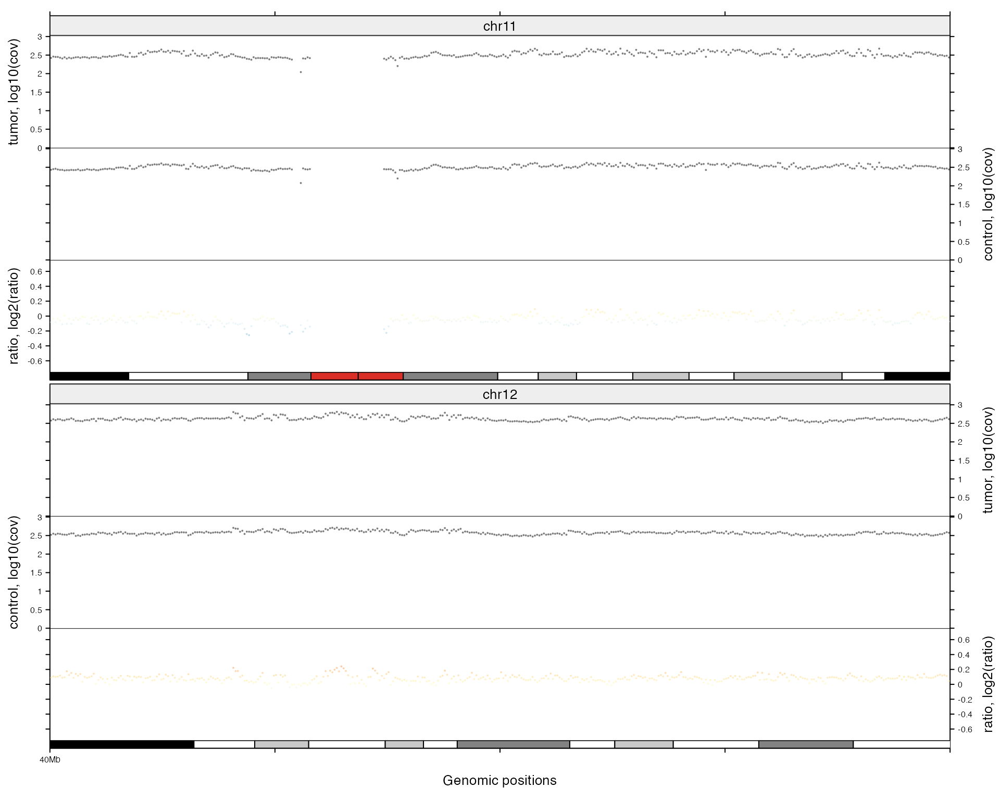
If start positions for two genomic categories are different (e.g. 0~100000 for the first one and 100000~200000 for the second one), you should not put them in a same column. You should normalize start positions in the first place.
The following code will generate an error.
df = data.frame(chr = c("chr1", "chr2"),
start = c(1e8, 2e8),
end = c(2e8, 3e8))
gtrellis_layout(df, ncol = 1)## Error in gtrellis_layout(df, ncol = 1): Start base in a same column should be the same.Support raster image
When there are, say, huge number of points, if the plot is saved as a PDF file, the file size would be very huge. A raster image is a ideal way to effectively reduce the file size that the subset of the image is first stored as e.g. a PNG file, then the PNG is imported and filled into the original plot. In add_track() (also for the five other customized function: add_points_track(), add_segments_track(), add_lines_track(), add_rect_track() and add_heatmap_track()), there are arguments use_raster, raster_quality, raster_quality and raster_device_param which controls how to use raster image.
When use_raster is set to TRUE, for every panel, the graphics are firstly written into e.g. a PNG file, later the PNG is imported and filled to the panel. When raster_quality is 1, the size of the PNG is as same as the size of the panel, while when raster_quality is e.g. 2, the size of the PNG is actually double size as the panel (or the area is four times as the panel), when it is scaled and fit into the panel, actually, the size will reduce half size, thus, when raster_quality is set to larger than 1, all units defined in panel_fun should be increase by multiplying raster_quanlity. See following example (Once you save the image as a PDF or visualize in R interactively, you will see the difference between tracks).
bed = generateRandomBed()
gtrellis_layout(category = "chr1", n_track = 4, track_ylim = range(bed[[4]]))
add_track(bed, panel_fun = function(bed) {
grid.points((bed[[2]] + bed[[3]]) / 2, bed[[4]], pch = 16, size = unit(2, "mm"))
})
add_track(bed, panel_fun = function(bed) {
grid.points((bed[[2]] + bed[[3]]) / 2, bed[[4]], pch = 16, size = unit(2, "mm"))
}, use_raster = TRUE)
add_track(bed, panel_fun = function(bed) {
grid.points((bed[[2]] + bed[[3]]) / 2, bed[[4]], pch = 16, size = unit(2, "mm"))
}, use_raster = TRUE, raster_quality = 2)
add_track(bed, panel_fun = function(bed) {
grid.points((bed[[2]] + bed[[3]]) / 2, bed[[4]], pch = 16, size = unit(4, "mm"))
}, use_raster = TRUE, raster_quality = 2)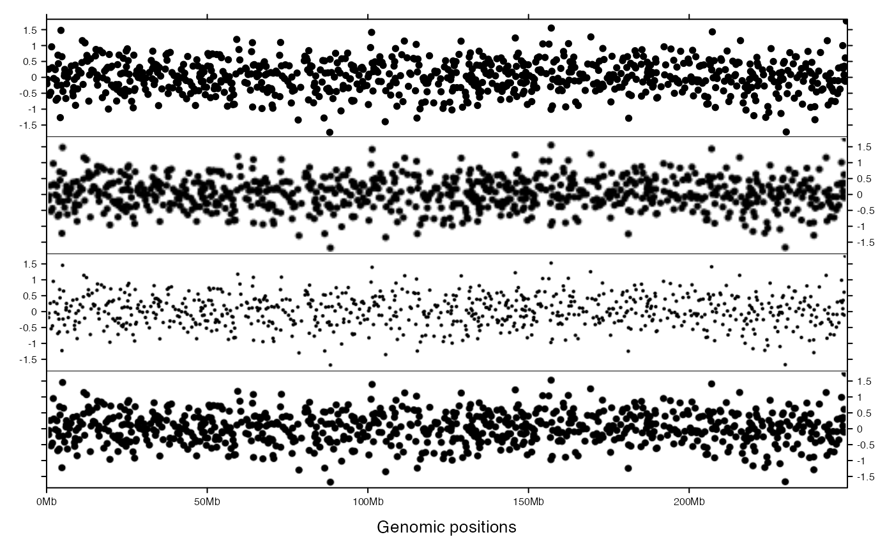
Session info
## R version 4.3.1 (2023-06-16)
## Platform: x86_64-apple-darwin20 (64-bit)
## Running under: macOS Ventura 13.2.1
##
## Matrix products: default
## BLAS: /Library/Frameworks/R.framework/Versions/4.3-x86_64/Resources/lib/libRblas.0.dylib
## LAPACK: /Library/Frameworks/R.framework/Versions/4.3-x86_64/Resources/lib/libRlapack.dylib; LAPACK version 3.11.0
##
## locale:
## [1] C/UTF-8/C/C/C/C
##
## time zone: Europe/Berlin
## tzcode source: internal
##
## attached base packages:
## [1] stats4 grid stats graphics grDevices utils datasets methods base
##
## other attached packages:
## [1] GetoptLong_1.0.5 RColorBrewer_1.1-3 circlize_0.4.15 gtrellis_1.31.1
## [5] GenomicRanges_1.52.1 GenomeInfoDb_1.36.4 IRanges_2.36.0 S4Vectors_0.40.2
## [9] BiocGenerics_0.48.1 ComplexHeatmap_2.18.0 knitr_1.44 markdown_1.10
##
## loaded via a namespace (and not attached):
## [1] sass_0.4.8 bitops_1.0-7 shape_1.4.6 stringi_1.7.12
## [5] digest_0.6.33 magrittr_2.0.3 evaluate_0.22 iterators_1.0.14
## [9] fastmap_1.1.1 foreach_1.5.2 doParallel_1.0.17 rprojroot_2.0.3
## [13] jsonlite_1.8.8 GlobalOptions_0.1.2 purrr_1.0.2 codetools_0.2-19
## [17] textshaping_0.3.7 jquerylib_0.1.4 cli_3.6.2 rlang_1.1.2
## [21] crayon_1.5.2 XVector_0.40.0 cachem_1.0.8 yaml_2.3.7
## [25] tools_4.3.1 parallel_4.3.1 memoise_2.0.1 colorspace_2.1-0
## [29] GenomeInfoDbData_1.2.10 vctrs_0.6.4 R6_2.5.1 png_0.1-8
## [33] matrixStats_1.2.0 lifecycle_1.0.4 zlibbioc_1.46.0 stringr_1.5.0
## [37] fs_1.6.3 clue_0.3-65 cluster_2.1.4 ragg_1.2.6
## [41] desc_1.4.2 pkgdown_2.0.7 bslib_0.6.1 glue_1.6.2
## [45] systemfonts_1.0.5 xfun_0.40 rjson_0.2.21 htmltools_0.5.7
## [49] rmarkdown_2.25 compiler_4.3.1 RCurl_1.98-1.12